Cuento 6 de 10 · Arco I · Ohr
El Sistema Solar

Versión sonora en producción. No será este texto leído en voz alta, sino una pieza propia.
La nube que empezó a caer era de las que ya habían visto morir muchas estrellas, y venía cargada con lo que ellas dejaron. Cayó durante mucho tiempo, girando cada vez más rápido, y en su centro se encendió una estrella más.
Una estrella común. Lo digo con cariño. No era de las enormes que se queman en un parpadeo, ni de las pequeñas y tímidas que apenas brillan. Era de las que duran: miles de millones de años, sin prisa. Ustedes la llaman Sol.
Se quedó con casi todo. De cada cien partes de materia de aquella nube, más de noventa y nueve terminaron en ella. Con lo que sobró, apenas unas migajas, se hicieron todos los planetas, las lunas, los cometas y cada piedra que hay en este rincón.
Cerca del Sol quedaron cuatro planetas de roca. Más lejos, los gigantes. Júpiter, el más grande, jaló y empujó a todos los demás durante su juventud, y algunos de esos empujones decidieron dónde quedó cada cosa.
Yo estaba en todas esas migajas. En el hielo de los cometas, en el hierro que se hundía hacia el centro de los planetas nuevos, en el polvo que todavía flotaba entre ellos.
Hace unos cuatro mil seiscientos millones de años de esto. Para ustedes es una cifra imposible; para mí, ayer.
Y algo que no sabía todavía, y que me habría hecho reír: que de todas esas migajas, una iba a tener exactamente el tamaño y la distancia para taparle la cara al Sol.